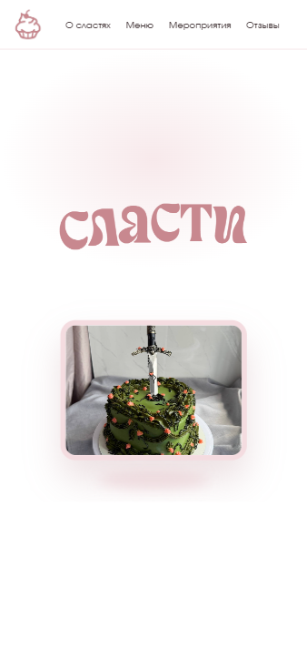
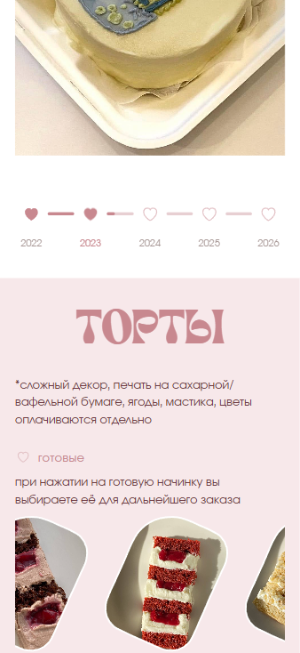
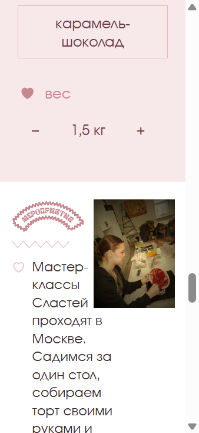

Портфолио-кейс
Сласти
Демонстрационный одностраничный сайт кондитерской. Это отдельная страница кейса: меню витрины сюда не перенесено.
Задача
Собрать витрину, на которой можно посмотреть торты, бенто и тортики в стакане, пролистать готовые начинки и прикинуть состав с предварительной суммой. Заказ при этом никуда не уходит.
Цель сайта
Показать характер кондитерской и устройство витрины: форматы, историю по годам, мастер-классы и конструктор. Сайт помечен как концептуальный.
Аудитория
Гипотеза, не исследование: человек в Москве, который выбирает торт, бенто или порцию в стакане к личному поводу, и человек, которому интересен мастер-класс. Подтверждённых интервью и данных о посетителях в проекте нет.
Структура
- Первый экран с названием и каруселью из трёх тортов.
- «О сластях»: знакомство, бенто, cakes to go, шкала 2022–2026.
- «Меню»: девять готовых начинок, окно «Все начинки», блок «Собери тортик».
- «Мероприятия»: новогодний мастер-класс 2025 и пасхальный 2026.
- «Отзывы»: четыре карточки. В подвале написано, что отзывы вымышлены.
Функции
- Меню подсвечивает раздел при прокрутке.
- Карусель на первом экране крутится перетаскиванием и стрелками клавиатуры.
- Текст «О сластях» набирается при появлении блока. При уменьшенной анимации в системе текст показывается сразу.
- История листается по сердечкам и стрелкам. Если блок виден и анимация разрешена, год сменяется сам каждые 5 секунд.
- Ленту начинок можно тянуть. «Все начинки» открывает диалог.
- Конструктор: формат (торт, бенто, стакан), бисквит, начинка, вес или количество. Готовая начинка отключает бисквит и начинку.
- Сумма считается на странице: торт — килограммы × 2800, бенто — 2490, стакан — штуки × 550. Вес торта от 1,5 до 10 кг, стаканов не меньше двух. Кнопка «Демо» ничего не отправляет.
- Заголовок «Мероприятия» рисуется на canvas. Карточки отзывов листаются кнопками и свайпом.
Дизайн
Белый фон, пыльно-розовые акценты, шрифт Involve для текста и Soledago для крупных заголовков. Начинки вырезаны формой куска торта. В конструкторе заполненное сердечко отмечает выбранный шаг. Фотографии — снимки изделий и мастер-классов из папки проекта.
Адаптивность
Вёрстка меняется около 640, 768, 840, 1024 и 1100 пикселей. На узком экране набор текста «О сластях» и расположение форматов другие, чем на широком. Заголовок «ТОРТЫ» на ширине до 767 пикселей уменьшен, чтобы слово не обрезалось. Карусель, лента и отзывы рассчитаны на палец: перетаскивание и свайп.
Техническая реализация
Один HTML-файл, одна таблица стилей и один скрипт. Сборки, базы и внешних запросов нет. Шрифты лежат рядом с сайтом. Локальная папка site/ на Next.js в публикацию не входит: опубликованная версия — статические файлы.
Безопасность и приватность
Форм, оплаты, аккаунтов, cookie, аналитики и отправки данных нет. Расчёт остаётся в браузере. Секретов и чужих скриптов в странице нет. На GitHub Pages страница отдаётся по HTTPS как статические файлы. Отзывы на сайте подписаны как вымысел, кнопка расчёта не обещает заказ.
Тестирование
Локально открыты первый экран, меню, лента, конструктор и мероприятия. Выбор «торт» показывает вес 1,5 кг. Внешних ссылок на витрине нет. Снимки ниже сняты с этого интерфейса, а не нарисованы отдельно. Проверка публичного адреса выполняется после включения GitHub Pages и фиксируется в отчёте о публикации.
Интерфейс



В проекте нет подтверждённых цифр продаж, посещаемости, конверсии и клиентских отзывов. Карточки отзывов на витрине — текст интерфейса, это прямо написано в подвале сайта.